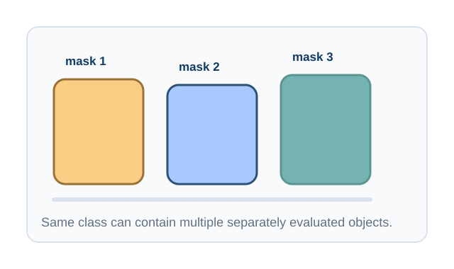

Definition
Instance segmentation combines localization, classification, and pixel-level mask prediction. The model output is usually a set of masks, class labels, confidence scores, and sometimes bounding boxes.

Difference from Object Detection
Object detection predicts bounding boxes. Instance segmentation predicts the visible object shape inside or around each box. This distinction matters when objects overlap or when area measurement is required.
Instance output: box + class + score + object mask
Difference from Semantic Segmentation
Semantic segmentation merges all pixels of a class into one category map. Instance segmentation separates object identities, so two neighboring objects of the same class remain distinct.
Important Model Families
Mask R-CNN
Mask R-CNN extends Faster R-CNN by adding a mask prediction branch to each region of interest. It is accurate and widely used as a teaching baseline because its components are easy to study: backbone, feature pyramid, proposal network, classifier, box regressor, and mask head.
YOLACT
YOLACT separates instance segmentation into prototype mask generation and per-instance mask coefficients. This design made real-time instance segmentation more practical.
YOLO Segmentation Models
Modern YOLO-style segmentation systems combine fast detection heads with mask prediction branches. They are common in applied projects where speed and deployment simplicity matter.
SAM-assisted Annotation Workflows
The Segment Anything Model can accelerate annotation by producing candidate masks from points, boxes, or prompts. In an academic workflow, students should still audit masks because promptable masks are not automatically task-specific labels.
Metrics: Mask AP and IoU
IoU compares a predicted mask with a ground-truth mask. Mask AP averages precision over confidence thresholds and IoU thresholds, rewarding models that produce accurate masks with reliable rankings.
Tutorial Cards
Mask R-CNN Explained
Trace the pipeline from proposals to RoIAlign and class-specific mask prediction.
YOLO Segmentation Pipeline
Study how fast object detection can be extended with per-instance mask outputs.
SAM for Pseudo Mask Generation
Use promptable masks as annotation candidates, then filter and refine them for a target dataset.
Instance Mask Evaluation
Practice matching predictions to ground truth and interpreting AP at multiple IoU thresholds.